The primary objective of this study is to identify the key determinants that drive high-technology exports among countries. To minimize the influence of external factors unrelated to macroeconomic dynamics, the analysis focuses exclusively on member states of the European Union. Utilizing a panel dataset covering the years 2012 to 2021, the study incorporates a wide range of macroeconomic, commercial, political, and technology-related indicators.
High-Tech Exports Graphs for All Countries (2012,2017,2021)
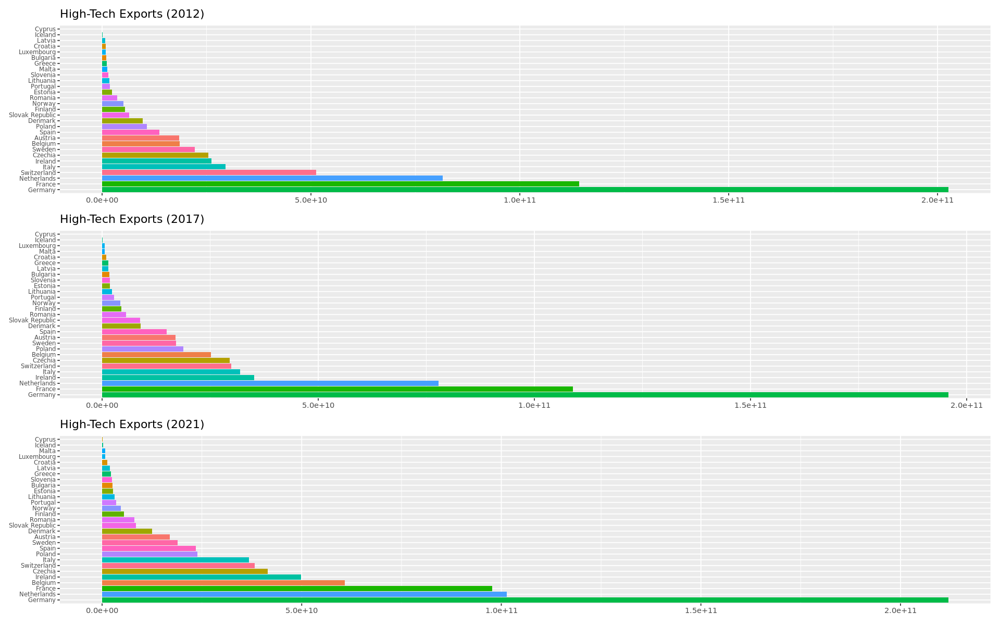High-Tech Exports Ratio Graphs for All Countries (2012,2017,2021)
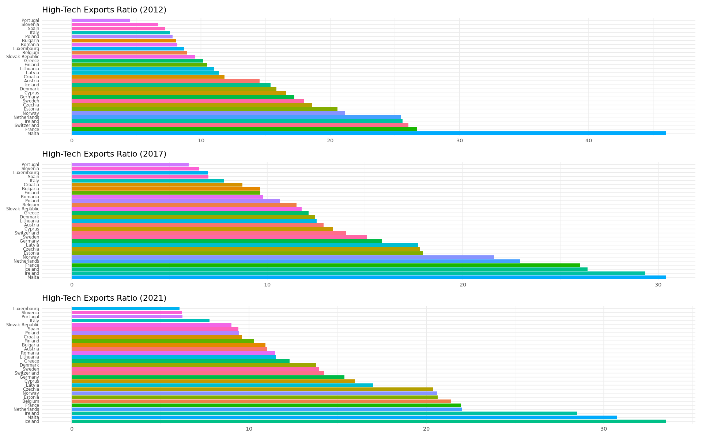High Tech Exports Values on the Map (2021)
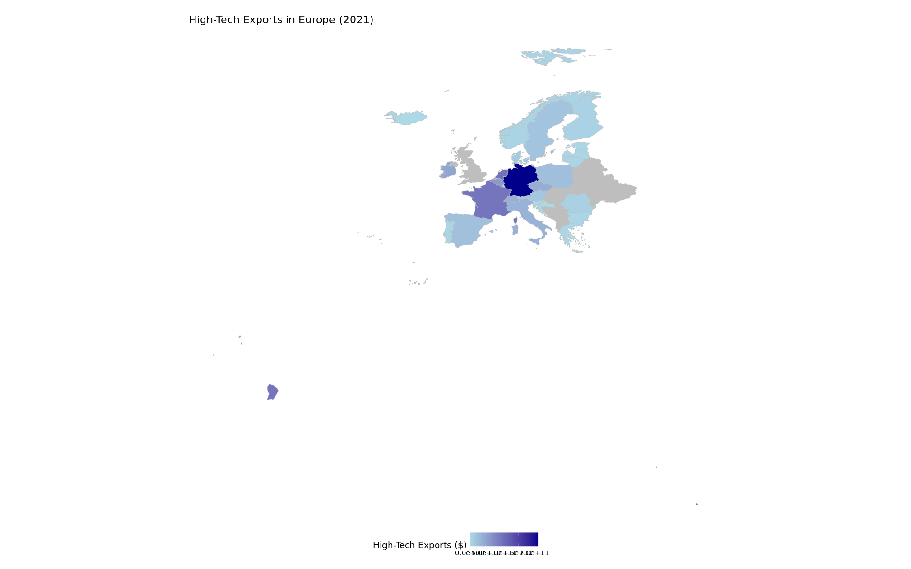High-Tech Exports Over Time by Country
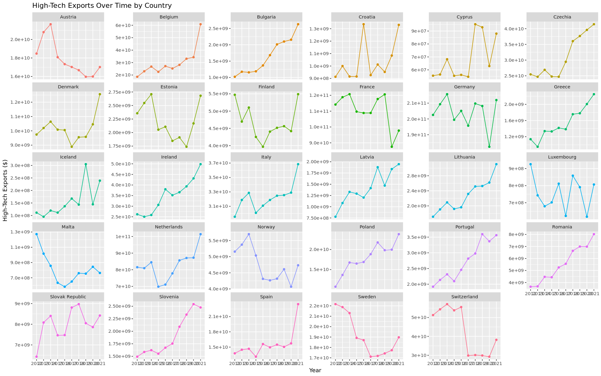This Elastic Net model was run using only the raw feature set, excluding country and year dummies. It served as an initial step to filter out irrelevant or weak predictors. The selected features from this model were then used in a more comprehensive Elastic Net model that included country and year effects.
The results of the Elastic Net regression highlight the relative contributions of various economic indicators to the model's predictive performance. The variables are presented in descending order of importance, with gross fixed capital formation presented as the most influential factor. This is followed closely by GDP per employed person and trade as a percentage of GDP, suggesting these measures play a substantial role in explaining variation in the outcome variable.
Elastic Net Feature Importance Plot
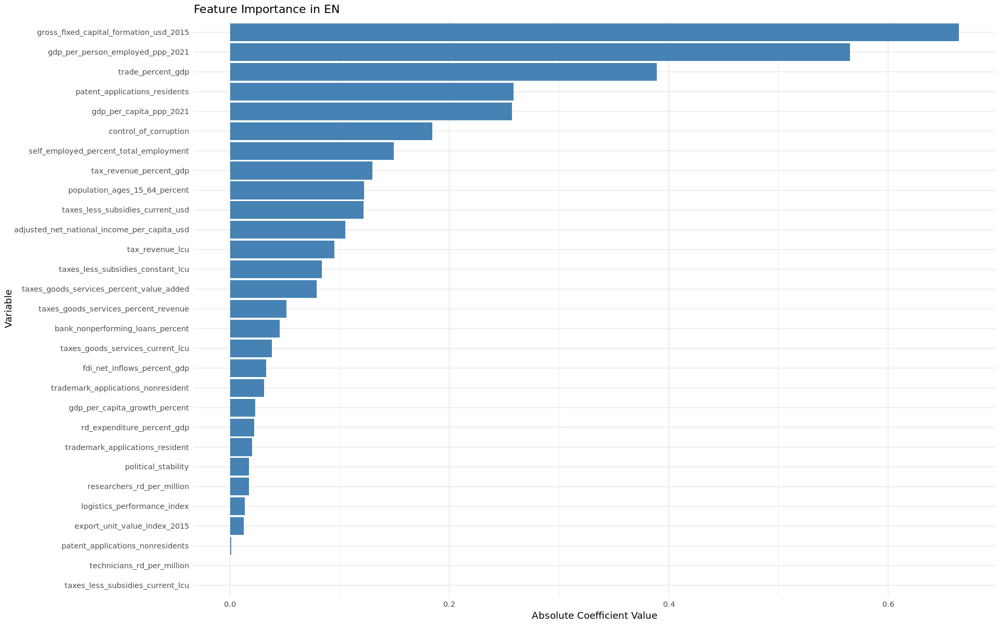In this step, we cross-validated the direction and strength of the relationship between the selected features and the target variable (hightechexports). We calculated the Pearson correlation between each variable and the target, and compared it with the sign of the Elastic Net model coefficient. This allows us to check whether the model's direction (positive or negative effect) aligns with the actual data trend. Variables with mismatched signs or low coefficients can be flagged for removal or further inspection.
Model Coefficients and Correlations
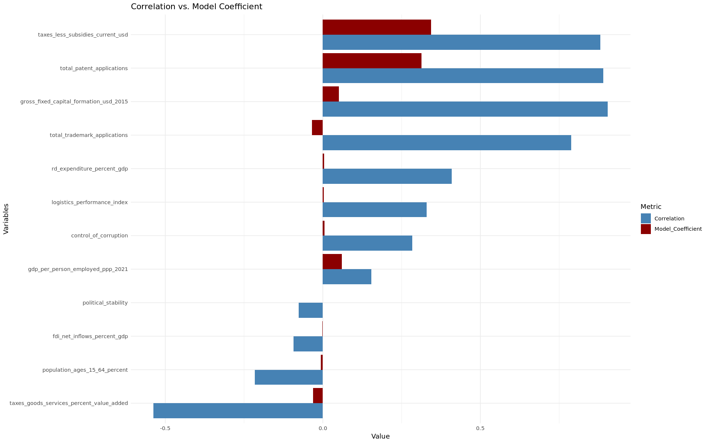Model finds out that; "taxes_less_subsidies_current_usd", "gdp_per_person_employed_ppp_2021", "control_of_corruption" features are statistically significant.
PLM Feature Importance Graph
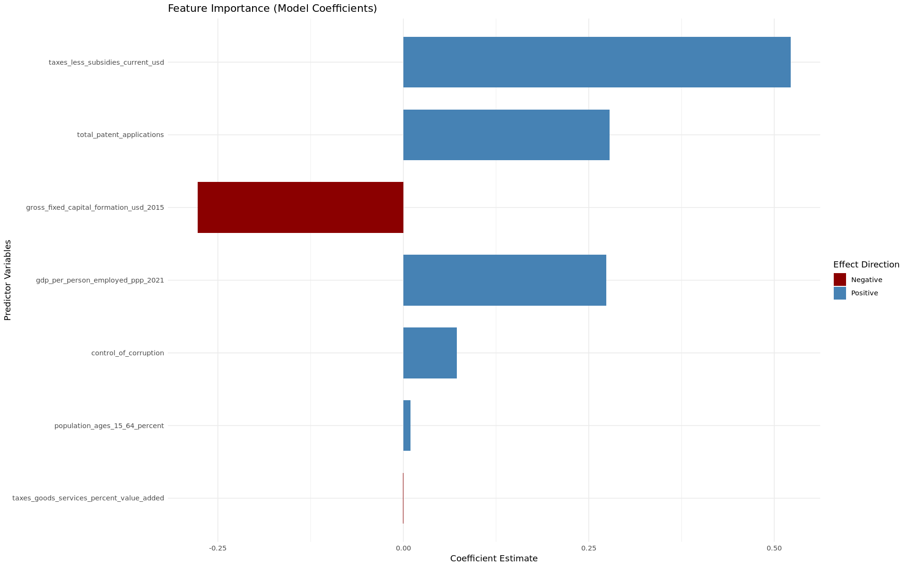In the next step, we further refined our variable selection by applying a multicollinearity check using the Variance Inflation Factor (VIF). Variables with high VIF scores were excluded to improve model stability and interpretability. The updated variable set was then used to fit a new fixed effects (PLM) model.
In the final PLM model, it is shown that: "gdp_per_person_employed_ppp_2021", "control_of_corruption" and "trade_percent_gdp" features are statistically significant.
Finally, feature importance was visualized to highlight the relative contribution of each remaining variable.
Feature Importance (VIF Selected Features)
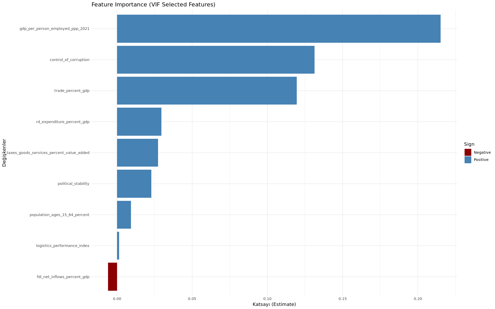In this step, we built a decision tree model to explore the patterns behind high-tech exports. The features used in the tree were carefully selected based on previous steps, including Elastic Net regularization, correlation and coefficient direction checks, VIF-based multicollinearity analysis, and panel regression results. This ensured that the tree structure was both interpretable and statistically grounded.
Decision Tree Analysis
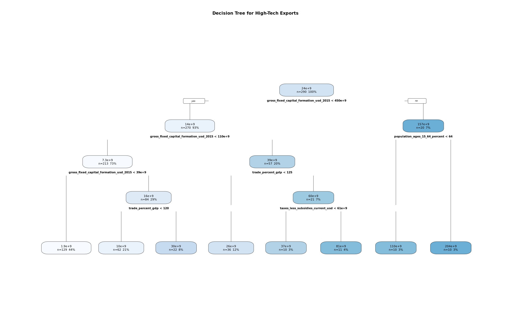Feature Importance for Decision Tree Analysis
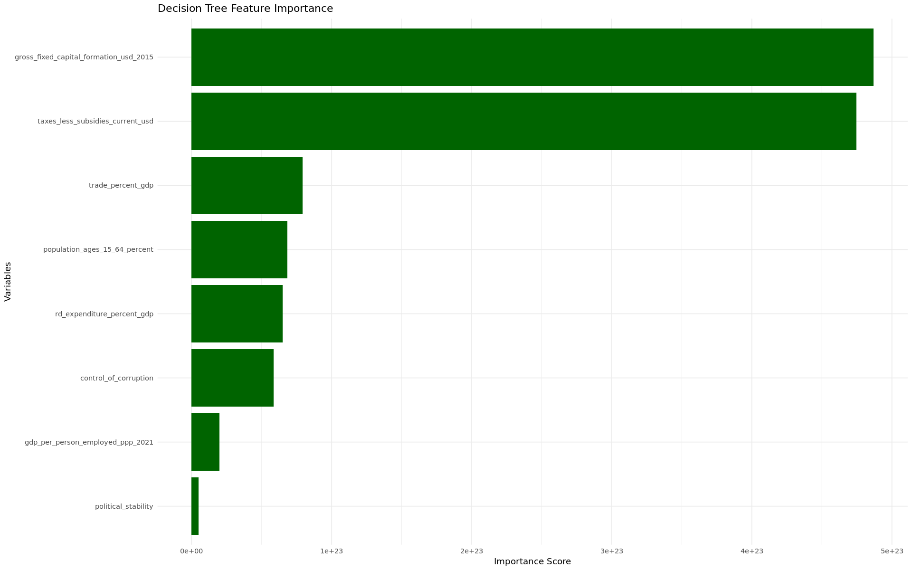We selected 3 clusters based on the results of Elbow method applied to the scaled dataset. The Elbow method showed a clear inflection point at k = 3.
Optimal Number of Clusters
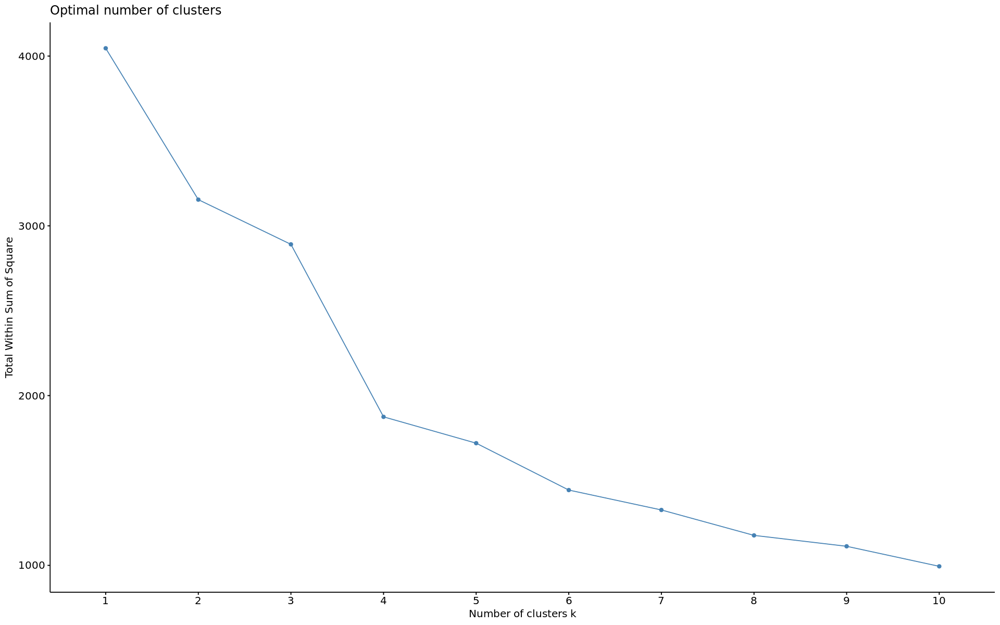Cluster 1 – Open & Wealthy Economies
Countries: Germany and France
Cluster 2 – Transitional Economies
Countries: Bulgaria, Croatia, Cyprus, Estonia, Greece, Italy, Latvia, Lithuania, Malta, Poland, Portugal, Romania, Slovak Republic, Slovenia and Spain
Cluster 3 – Tech-Driven Power Economies
Countries: Austria, Belgium, Czechia, Denmark, Finland, Iceland, Ireland, Luxembourg, Netherlands, Norway, Sweden and Switzerland
K-means Clustering (3 Clusters)
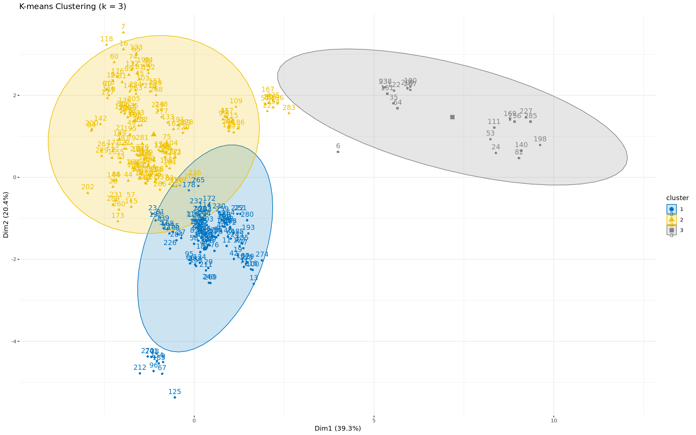Clusters of European Countries by High-Tech Characteristics (2021)
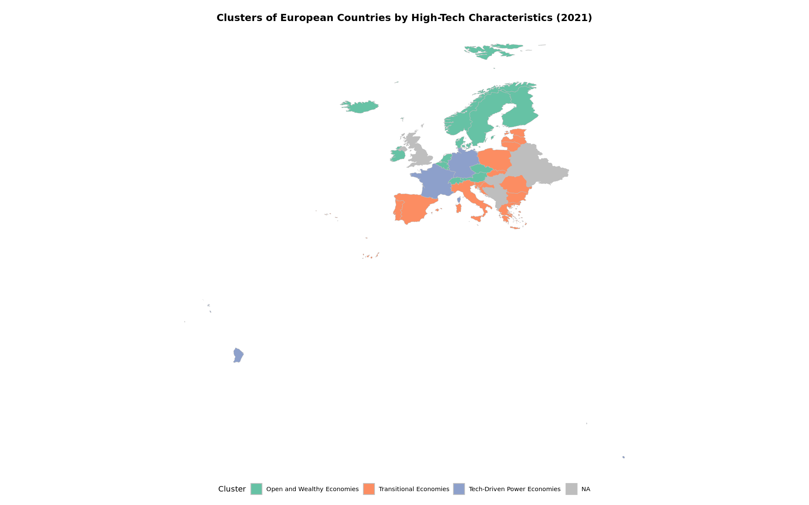Visual below shows the trajectories of selected European countries on the PCA space from 2012 to 2021 based on macro-level indicators.
Countries like Estonia and Poland show a steady upward and rightward movement, indicating improvement across key dimensions.
Germany and Sweden, on the other hand, remain relatively stable in the PCA space, suggesting consistent performance over time.
Italy and Romania display more irregular and shifting paths, reflecting fluctuations or mixed progress in their economic or structural indicators.
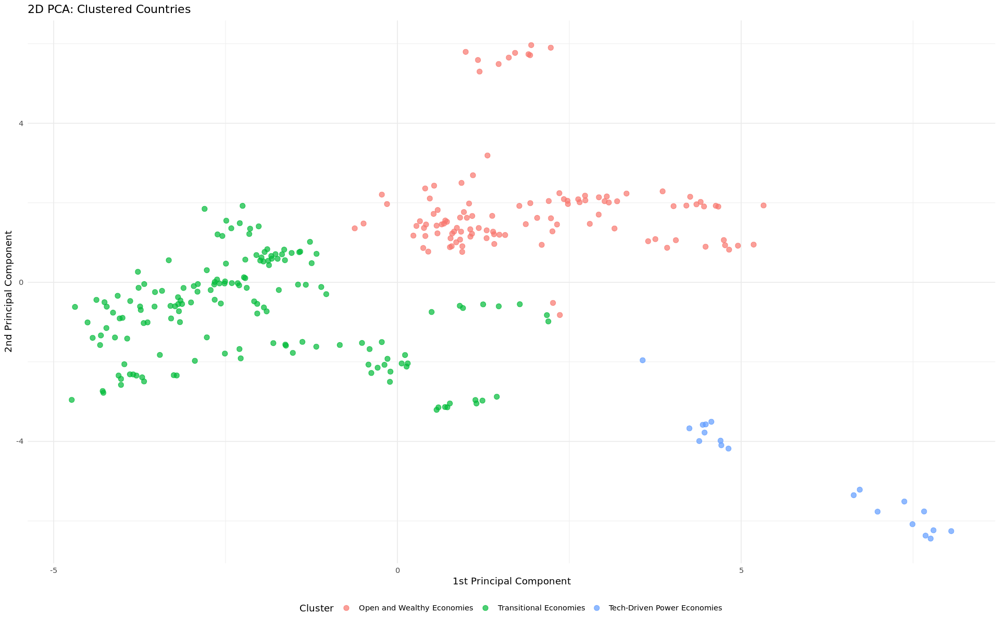Countries moving rightward over time on the PCA plot are improving economically; those moving upward are strengthening in governance and demographic structure. The position and trajectory of each country in the PCA space help visualize multidimensional development over time.
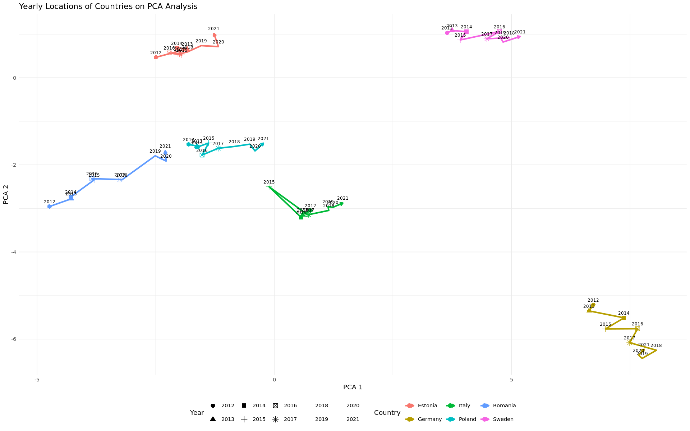This study analyzes the macroeconomic and institutional drivers of high-tech exports in European countries (2012–2021). Using Elastic Net, we identified key predictors, with R&D expenditure, income per worker, trade openness, and institutional quality emerging as consistent factors. Panel regressions confirmed their significance, especially the strong effects of R&D intensity and income per capita.
To improve reliability, we tested correlations, multicollinearity, and coefficient robustness. Decision tree models further showed that capital investment, trade integration, and governance strength are decisive for higher export performance.
Clustering distinguished three country profiles: (1) open and wealthy economies, (2) transitional economies with weaker R&D and exports, and (3) innovation-driven leaders like Germany. PCA validated these clusters and highlighted divergent trajectories—some countries advancing structurally, others stagnating.
Overall, the findings stress that innovation investment, openness, and institutional strength are critical to sustaining Europe’s high-tech export growth.